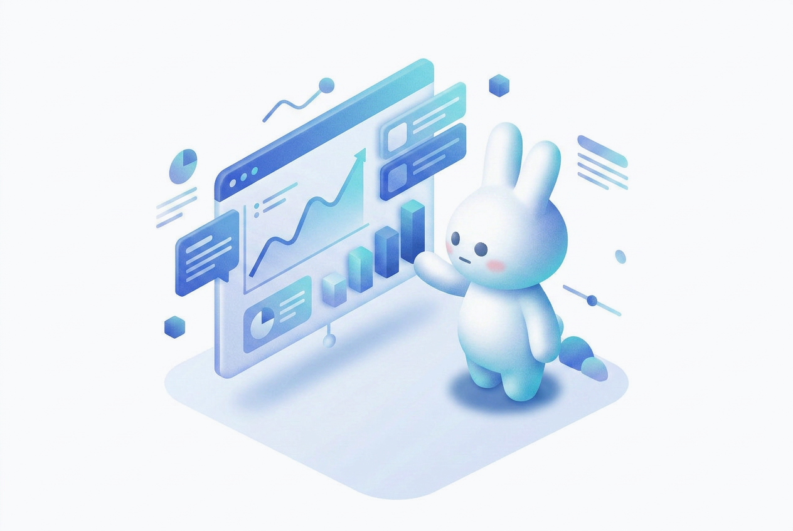

Solution 01 — 分析
組織状態の分析で
課題を特定
サーベイやデータ分析で組織の現状を可視化。エンゲージメントの高低・コミュニケーションのボトルネック・離職リスクを数値で把握します。
- 組織状態サーベイで現状を数値化
- 部署・拠点別の課題を自動分類
- 管理画面でリアルタイムにデータ確認
Workplace Engagement Platform
組織課題の分析から、組織改善施策の実行まで。
100社100通りに対応できる組織改善クラウドです。
利用中企業数1,400社以上
幅広い業界・規模の企業に導入いただいています
About TUNAG
分析 → 実行 → 浸透のPDCAを回し、組織の働きがいを継続的に高めます。
サーベイやデータ分析で組織の現状を可視化。エンゲージメントの高低・離職リスクを数値で把握します。
6万件以上の取り組み事例から最適施策を選択。ノーコードで即日実装できます。
施策を全従業員のスマホへ届け、利用率・反応率をトラッキング。PDCAを回しながら成果を最大化します。
Solution 01 — 分析
サーベイやデータ分析で組織の現状を可視化。エンゲージメントの高低・コミュニケーションのボトルネック・離職リスクを数値で把握します。

Solution 02 — 実行
特定した課題に対して、社内表彰・日報共有・イベント告知など100種以上の取り組みをノーコードで実施。自社に合った施策を素早く試せます。
Solution 03 — 浸透
施策を全従業員のスマホへ届け、利用率・反応率をトラッキング。PDCAを回しながら組織改善の効果を継続的に最大化します。
Features
現場DXを支える12の機能を標準装備。すぐに使えて、ずっと使える設計です。
Why TUNAG
継続率99%以上の信頼には、理由があります。
Reason 01
お知らせ・日報・チャットなど、日常業務に組み込まれた設計だからこそ、施策の到達率・反応率が高水準を維持。利用ID数150万人以上が証明しています。
Reason 02
課題に合わせた取り組みをノーコードで実装。既製品ではなく、貴社の組織文化・フェーズに最適化した施策を素早く実行できます。
Reason 03
サーベイ・利用ログ・エンゲージメントスコアを一元管理。現場の変化をリアルタイムに把握し、次の施策の意思決定を支援します。
Reason 04
PCを持たないアルバイト・パートスタッフも、スマホ1台で会社とつながれる。拠点・職種・雇用形態を超えた一体感を生み出します。
Reason 05
専任カスタマーサクセスが導入から定着まで伴走。1,400社以上の知見をもとに、貴社の状況に合った活用方法を継続的に提案いたします。
Use Cases
各社に合わせた取り組みをカスタマイズ。人と組織に関する様々な課題に臨機応変に対応できます。
社内表彰・感謝のメッセージ機能で、日常的なつながりと働きがいを創出。
全社員が同じ情報を同じタイミングで受け取れる、フラットな情報流通を実現。
入社初期のオンボーディングから定期的なサーベイまで、定着を数値で管理。
店舗・工場・本社が一つのプラットフォームでつながり、組織の壁をなくす。
1on1記録・目標管理・チームフィードバックをデジタル化し、マネージャーの負荷を軽減。
行動データ・サーベイ結果を統合分析し、次の打ち手を根拠ある意思決定で実行。
Next Step
1,400社以上の実績をもとに最適な活用方法をご提案いたします
Pricing
ご利用人数や機能に応じて最適なプランをご案内いたします
初期費用
初期設計・導入支援
要相談
専任スタッフが貴社の組織構造をヒアリングし、最適な初期設計・設定・社内説明会をサポートします。
月額費用
利用規模に応じた従量プラン
要相談
ご利用人数・必要機能・サポートレベルに応じて最適なプランをご提案します。小規模から大企業まで対応可能です。
料金についての詳細はこちらからお気軽にお問い合わせください
Getting Started
ご契約から最短1ヶ月で利用可能です。専任担当が丁寧に伴走いたします。
01
まずはお気軽にご相談ください。貴社の現状・課題をお伺いし、TUNAGの活用方法をご提案いたします。
02
貴社の組織課題・規模に合わせた最適なプラン・機能構成・導入スケジュールをご提案します。
03
専任スタッフが貴社の組織構造に合わせたポータル設計をサポート。社内向けの説明会も実施します。
04
運用開始後も専任カスタマーサクセスが定着を支援。利用データをもとに活用度を最大化し、継続的な改善をご支援いたします。
FAQ
数十名の小規模組織から数万名の大企業まで幅広く対応しております。貴社の規模・組織構造に合わせた最適なプランをご提案いたします。まずはお気軽にお問い合わせください。
ご契約後、専任スタッフが初期設計〜アカウント発行〜社内説明会まで一貫してサポートします。最短1ヶ月での本格運用開始が可能です。準備状況によってはさらに短縮できるケースもございます。
はい、多数の事例がございます。TUNAGは従業員の私用スマートフォンからの利用にも対応しており、BYOD（私用端末活用）でご導入いただいている企業様が多くいらっしゃいます。セキュリティポリシーへの対応についても個別にご相談いただけます。
プライバシーマーク取得・ISMS認証（ISO/IEC 27001）取得済みです。データの暗号化・アクセス権管理・SSO対応など、エンタープライズ水準のセキュリティ対策を講じています。詳細なセキュリティ資料もご用意しておりますのでお問い合わせください。
Free Download
資料でわかること:
① TUNAGの機能・活用方法 ② 1,400社以上の導入事例 ③ 料金・導入フロー
Contact
まずはお気軽にご相談ください。通常1営業日以内にご返信いたします。